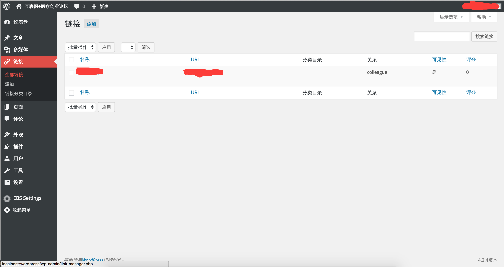

wordpress主题制作总结
- 网站名字
<?php bloginfo('name');?> - 网站描述
<?php bloginfo('description');?> 查询Post的主循环:
1
// The Query is overly simplistic and problematic way to modify main query of a page by replacing it with new instance of the query // don't use query_posts() ever; 所以参考下面的get_posts()和WP_Query() <?php //option 1: bad choice query_posts( 'posts_per_page=5' ); //option 2: good choice get_posts( array( 'posts_per_page' => 5 ) ); //option 3: complex but powerful $the_query = new WP_Query( array( 'posts_per_page' => 5 ) ); ?> <?php if(have_posts()): ?> <?php while(have_posts()): the_post(); ?> <?php endwhile; ?> <?php endif; ?> <?php else: ?> <div class="post"> <h2><?php _e('Not Found'); ?></h2> </div> <?php endif; ?> // Reset Query wp_reset_query();
1
<?php $args = array( 'posts_per_page' => 5, 'offset' => 0, 'category' => '', 'category_name' => '', 'orderby' => 'date', 'order' => 'DESC', 'include' => '', 'exclude' => '', 'meta_key' => '', 'meta_value' => '', 'post_type' => 'post', 'post_mime_type' => '', 'post_parent' => '', 'author' => '', 'post_status' => 'publish', 'suppress_filters' => true ); $posts_array = get_posts( $args ); ?> $the_query = new WP_Query($args); // The Loop if ($the_query->have_posts()){ } WP_Query Object ( [query_vars] => Array ( [page] => [pagename] => blog [error] => [m] => 0 [p] => 0 [post_parent] => [post_type] => [subpost] => [subpost_id] => [attachment] => [attachment_id] => 0 [name] => [static] => [page_id] => 0 [second] => [minute] => [hour] => [day] => 0 [monthnum] => 0 [year] => 0 [w] => 0 [category_name] => [tag] => [cat] => [tag_id] => [author_name] => [feed] => [tb] => [paged] => 0 [comments_popup] => [meta_key] => [meta_value] => [preview] => [s] => [sentence] => [fields] => [category__in] => Array ( ) [category__not_in] => Array ( ) [category__and] => Array ( ) [post__in] => Array ( ) [post__not_in] => Array ( ) [tag__in] => Array ( ) [tag__not_in] => Array ( ) [tag__and] => Array ( ) [tag_slug__in] => Array ( ) [tag_slug__and] => Array ( ) ) [tax_query] => [meta_query] => [post_count] => 0 [current_post] => -1 [in_the_loop] => [comment_count] => 0 [current_comment] => -1 [found_posts] => 0 [max_num_pages] => 0 [max_num_comment_pages] => 0 [is_single] => [is_preview] => [is_page] => [is_archive] => [is_date] => [is_year] => [is_month] => [is_day] => [is_time] => [is_author] => [is_category] => [is_tag] => [is_tax] => [is_search] => [is_feed] => [is_comment_feed] => [is_trackback] => [is_home] => 1 [is_404] => [is_comments_popup] => [is_paged] => [is_admin] => [is_attachment] => [is_singular] => [is_robots] => [is_posts_page] => 1 [is_post_type_archive] => [query_vars_hash] => 41032f87127fba65fb6743b1e97d8662 [query_vars_changed] => [thumbnails_cached] => [query] => Array ( [page] => [pagename] => blog ) [queried_object] => stdClass Object ( [ID] => 16 [post_author] => 1 [post_date] => 2012-01-31 17:23:57 [post_date_gmt] => 2012-01-31 17:23:57 [post_content] => [post_title] => Blog [post_excerpt] => [post_status] => publish [comment_status] => open [ping_status] => open [post_password] => [post_name] => blog [to_ping] => [pinged] => [post_modified] => 2012-01-31 17:23:57 [post_modified_gmt] => 2012-01-31 17:23:57 [post_content_filtered] => [post_parent] => 0 [guid] =>
多语言支持: <?php _e(‘需要翻译的文字’);?> 这里放上_e()为后续的多语言支持提供入口
- Post的名字: <?php the_title();?>
- Post的链接: <?php the_permalink();?>
- Post的缩略内容: <?php the_excerpt();?>
- Post的详细内容: <?php the_content();?>
- Post的作者: <?php the_author();?>
- Post的日期: <?php the_time(‘Y-m-d’);?>
- Post的ID: <?php the_ID(); ?>
1
<div class="post" id="post-<?php the_ID()?>"></div> <!-- 通过添加Post的ID，在style.css里面可以为每一篇文章单独定制css -->
- Post的metadata:
1
<p class="postmetadata"> <!-- 当弹出留言的功能激活的话，comments_popup_link() 调用一个弹出的留言窗口，如果没有激活，comments_popup_link() 则只是简单的显示留言列表。No Comments » 是在没有留言的时候显示的。1 Comment » 是用于当刚好只有1条留言时候。% Comments &187; 是用于当有多于一条留言的时候。比如：8 Comments »。百分号 % 用来显示数字。» 是用来显示一个双层箭头 »。--> <?php _e('Tag:');?> <?php the_category(',');?> <?php comments_popup_link('No Comments »', '1 Comment »', '% Comments »'); ?> <!-- 这个只有当我们以管理员或者作者身份登录的的时候才可见。 edit_post_link() 只是简单显示一个可以用来编辑当前日志的编辑链接 --> <?php edit_post_link(‘Edit’, ‘ | ‘, ”); ?> </p>
- Post下面生成上一页和下一页链接的函数
1
<div class="navigation"> <?php posts_nav_link(); ?> <?php //posts_nav_link( $sep, $prelabel, $nextlabel ); /* $sep (string) Text displayed between the links. Defaults to ' :: ' in 1.2.x. Defaults to ' — ' in 1.5. $prelabel (string) Link text for the previous page. Defaults to '<< Previous Page' in 1.2.x. Defaults to '« Previous Page' in 1.5. $nxtlabel (string) Link text for the next page. Defaults to 'Next Page >>' in 1.2.x. Defaults to 'Next Page »' in 1.5 */ ?> </div>
- sidebar的category列表: <?php wp_list_categories($args); ?>
1
<?php $args = array( 'show_option_all' => '', 'orderby' => 'name', 'order' => 'ASC', 'style' => 'list', 'show_count' => 0, 'hide_empty' => 1, 'use_desc_for_title' => 1, 'child_of' => 0, 'feed' => '', 'feed_type' => '', 'feed_image' => '', 'exclude' => '', 'exclude_tree' => '', 'include' => '', 'hierarchical' => 1, 'title_li' => __( 'Categories' ), 'show_option_none' => __( '' ), 'number' => null, 'echo' => 1, 'depth' => 0, 'current_category' => 0, 'pad_counts' => 0, 'taxonomy' => 'category', 'walker' => null ); wp_list_categories( $args ); ?>
- sidebar的页面列表: <?php wp_list_pages( $args ); ?>
1
<?php $args = array( 'authors' => '', 'child_of' => 0, 'date_format' => get_option('date_format'), 'depth' => 0, 'echo' => 1, 'exclude' => '', 'include' => '', 'link_after' => '', 'link_before' => '', 'post_type' => 'page', 'post_status' => 'publish', 'show_date' => '', 'sort_column' => 'menu_order, post_title', 'sort_order' => '', 'title_li' => __('Pages'), 'walker' => new Walker_Page ); ?>
- sidebar的archive列表: <?php wp_get_archives( $args ); ?>
1
<?php $args = array( 'type' => 'monthly', 'limit' => '', 'format' => 'html', 'before' => '', 'after' => '', 'show_post_count' => false, 'echo' => 1, 'order' => 'DESC' ); wp_get_archives( $args ); ?>
- sidebar的友情链接:
- 编辑functions.php, 加入如下代码
add_filter(‘pre_option_link_manager_enabled’,’__return_true’); - 后台会出现链接编辑的页面,还可以将链接设为图片，这样就可以用友链的网站logo来表示友链了
 - 在需要显示的地方添加如下代码，args是可选
1
<?php $args = array( 'orderby' => 'name', 'order' => 'ASC', 'limit' => -1, 'category' => ' ', 'exclude_category' => ' ', 'category_name' => ' ', 'hide_invisible' => 1, 'show_updated' => 0, 'echo' => 1, 'categorize' => 1, 'title_li' => __('Bookmarks'), 'title_before' => '<h2>', 'title_after' => '</h2>', 'category_orderby' => 'name', 'category_order' => 'ASC', 'class' => 'linkcat', 'category_before' => '<li id=%id class=%class>', 'category_after' => '</li>' ); wp_list_bookmarks($args); ?>
- sidebar的搜索控件: <?php get_search_form( $echo ); ?>
$echo=TRUE 表示echo表单字符串，$echo=FALSE表示return表单字符串 - sidebar的日历控件: <?php get_calendar( $initial, $echo ); ?>
1
<?php get_calendar( $initial, $echo ); ?> $initial (boolean) (optional) If true, the day will be displayed using a one-letter initial; if false, an abbreviation based on your localization will be used. Default: True False - causes "Sunday" to be displayed as "Sun" True - causes it to be "S" $echo (boolean) (optional) Determines whether or not the calendar should be displayed. Default: True False - Returns calendar, but does not echo it to screen True - Echos calendar, but does not return it to a variable
- sidebar的登录控件:
1
<?php wp_register(); ?> <?php wp_loginout(); ?> <?php wp_meta(); ?>
- sidebar窗体化:
1
//将widgets窗体化，变成可以拖拽的控件 function bs3_theme_widgets_init() { register_sidebar( array( 'name' => __( 'Widget Area', 'bs3-theme' ), 'id' => 'sidebar-1', 'description' => __( 'Add widgets here to appear in your sidebar.', 'bs3-theme' ), 'before_widget' => '<aside id="%1$s" class="widget %2$s">', 'after_widget' => '</aside>', 'before_title' => '<h2 class="widget-title">', 'after_title' => '</h2>', ) ); } add_action( 'widgets_init', 'bs3_theme_widgets_init' );
- footer相关，可以放入友情链接的<?php wp_list_bookmarks($args);?>